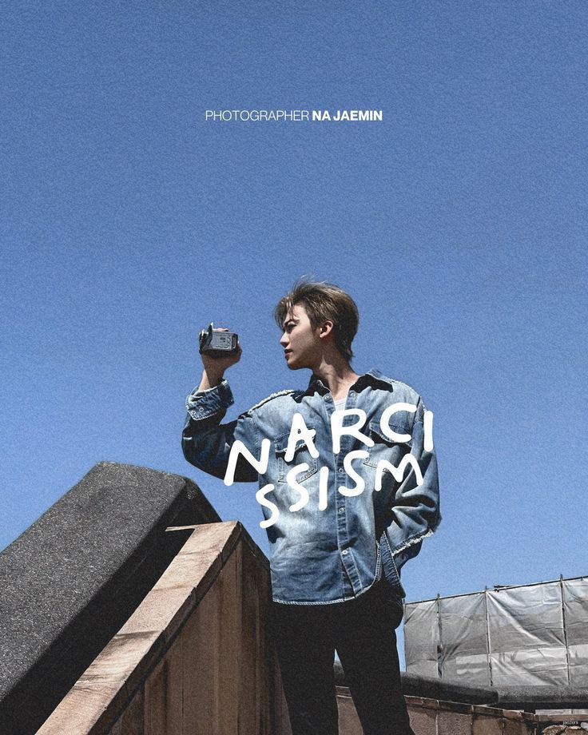

Narcissism bukan sekadar pameran foto; ini adalah perjalanan introspeksi melalui lensa Na Jaemin. Di sini, setiap jepretan adalah dialog antara keheningan dan emosi yang meluap.
Melalui pameran solo pertamanya, Jaemin mengajak kita melihat dunia melalui sudut pandang yang jujur—menangkap keindahan dalam ketidaksempurnaan dan kehangatan dalam setiap momen "Self-Love".
"I want to archive the emotions that words cannot describe." — Na Jaemin
📍 SM ENTERTAINMENT, SEOUL
View Gallery Details & Directions →